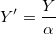
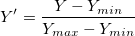
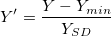
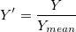
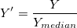
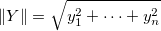

はユーザ定義値とすると、正規化したデータ
はユーザ定義値とすると、正規化したデータ  は次のように計算されます。
は次のように計算されます。
内容 |
入力XYデータまたは曲線を正規化します。
| 表示 名 |
変数 名 |
I/O と データ型 |
デフォルト 値 |
説明 |
|---|---|---|---|---|
| 入力 | iy |
入力 XYRange |
|
入力曲線かXY範囲を指定します。 |
| データ情報 | datainfo |
入力 TreeNode |
|
これはダイアログにデータ情報を表示するためのものです。LabTalkでXファンクションを使うとき、この変数は使用しないで下さい。 |
| 正規化の方法 | method |
入力 int |
|
入力データを正規化する手法を指定します。
|
| ユーザ定義の値 | val |
入力 double |
|
この変数は、方法が特定値で割るにセットされている場合のみ利用できます。入力データを割るのに使用する値を指定します。 |
| 参照列 | refcol |
入力 Column |
|
この変数は、正規化の方法が参照列を使うにセットされている場合のみ利用できます。これは参照する列を指定するために使用されます。 |
| 正規化 | type |
入力 Int |
|
この変数は、正規化の方法が参照列を使うにセットされている場合のみ利用できます。参照列のどの統計量を正規化の値にするかを決定します。正規化したら、入力列の選択された統計量が参照列の統計量と合致します。 オプションリスト
|
| 参照セル | cell |
入力 Range |
|
この変数は、方法が参照セル値で割るにセットされている場合のみ利用できます。参照として使用するセルを指定します。 |
| 出力 | oy |
出力 XYRange |
|
正規化したデータの出力を指定します。 シンタックスはここをご覧ください。 |
次のスクリプトは、曲線をユーザ定義の値で割ることによって正規化する例を示しています。
string fn$=system.path.program$ + "\Samples\Curve Fitting\Exponential Decay.dat "; impASC fname:=fn$; normalize iy:=(1,2) method:=specify val:=5 oy:=<new>;
そして、2つの列が入力ワークシートに追加されます。1つにはx値が保存され、もう1つには正規化したy値が保存されています。
Y が入力曲線の y 値、 はユーザ定義値とすると、正規化したデータ は次のように計算されます。
特定値で割る

[0, 1]に正規化

[0, 100]に正規化
}{Y_{max}-Y_{min}}")
Zスコア(N(0, 1)で正規化)

最大値で割る

最小値で割る

平均で割る

中央値で割る

標準偏差で割る

ノルムで割る


 はn番目の
はn番目の  値です。
値です。
最頻値で除算

Divided by Sum: